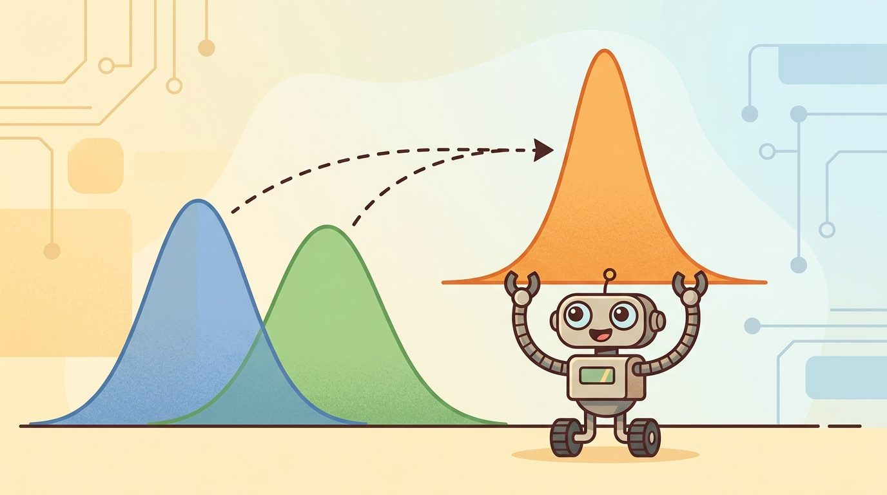
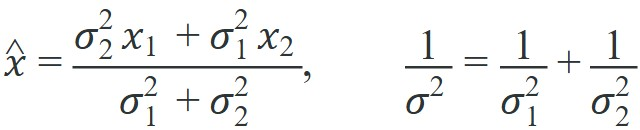
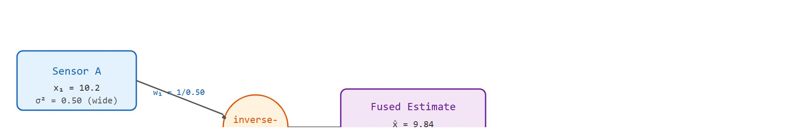

"No single sensor earned enough trust to act on alone. Together, they negotiated an estimate worth betting on."
A Sensor Array in Rare Agreement

Figure 8.7A: opening illustration for sensor fusion, showing multiple uncertain sensor streams converging into one shared estimate.
This section assumes familiarity with Gaussian noise models and the Kalman filter update introduced in section 8.6. The fused state estimate produced here becomes the input to the controllers developed in section 7.5 (model predictive control), where the quality of the belief directly determines control horizon accuracy. The ideas recur in Part III alongside sensor and physics randomization in section 13.2, which covers how to stress-test fusion pipelines by varying noise parameters across simulation runs.
Big Picture
A delivery robot freezes at an intersection because its GPS says it is ten meters east of where its camera puts it. Neither sensor is lying; both are just uncertain. The robot that keeps moving is the one that knows how to combine those conflicting signals into a single confident estimate rather than picking one and discarding the other. Sensor fusion is that skill, and it sits at the center of every deployed embodied AI system right now because real hardware is never as clean as simulation, as the opening illustration in Figure 8.7A depicts. This section derives the inverse-variance weighting rule, connects it to the Kalman update, and builds a working multi-sensor position estimator that can be stress-tested with injected noise.
Two sensors stare at the same wall and report distances 30 centimeters apart, yet the correct move is to trust neither one outright and instead build a third number that is more accurate than either: how can combining two imperfect estimates produce a result sharper than the best of them? First we define the object of study, then we connect it to the agent loop, then we test it with a compact implementation.
Sensor fusion turns on four practical questions: what must the agent know, what can it observe, what action is available, and what evidence shows that the action worked under the stated conditions?
Action Is The Test
A representation earns its place when it changes the measurable action interface. In Sensor fusion intuition and practice, the reader should keep asking which decision becomes easier, safer, or more reliable.
A robot navigating a warehouse corridor relies on wheel odometry to track how far it has moved, but wheel slip on a polished floor silently corrupts the odometry estimate within seconds. A laser scanner can correct that drift, but a scanner cannot tell the robot how fast it is accelerating between scans. An IMU fills that gap, yet IMU bias grows over time unless periodic corrections reset it. No single sensor covers the full state reliably: each has a failure mode the others compensate for. Sensor fusion combines those imperfect, complementary streams into a single belief more reliable than any one source alone. The payoff is concrete. Robots that fuse IMU, LiDAR, and odometry (such as Boston Dynamics Spot or the Apollo autonomous vehicle platform) hold centimeter-level localization where any single sensor would diverge within meters (as of 2024).
Theory
For Sensor fusion intuition and practice, the practical design rule is to make the interface inspectable before optimization begins: inputs, outputs, units, latency, bounds, and failure labels should all be visible in the saved artifact.
Mechanism
The mechanism in Sensor fusion intuition and practice is the contract between representation and action. Name what enters the module, what leaves it, which assumptions make that transformation valid, and which log would reveal a bad handoff.
Worked Example: Inverse-Variance Fusion
With the inputs, outputs, and failure labels of that contract now made inspectable, the remaining question is the actual arithmetic that turns two uncertain numbers into one sharper number.
The core intuition of sensor fusion fits in one line: when you combine independent estimates of the same quantity, weight each one by its precision (the inverse of its variance). Given two Gaussian estimates $x_1$ with variance $\sigma_1^2$ and $x_2$ with variance $\sigma_2^2$, the optimal fused estimate and its variance are

Read the left equation as a weighted average where each estimate is scaled by the other's variance, and the right equation as the rule that fused precision is the sum of the input precisions; Figure 8.7B traces both quantities through a concrete two-sensor example.

Figure 8.7B: Inverse-variance fusion process. Sensor B carries narrower uncertainty (smaller variance), so it receives higher weight. The fused estimate lands closer to Sensor B and achieves variance smaller than either input alone.
Think of inverse-variance weighting like two cooks estimating how much salt is already in a pot. One cook has a precise milligram scale and says "4.2 g"; the other is guessing by taste and says "somewhere around 3 to 6 g." You do not average the two estimates equally: you trust the scale far more, so the combined answer lands very close to 4.2 g. And crucially, your combined estimate is slightly more confident than the scale alone, because even the vague taste-test ruled out extreme values. That is exactly what inverse-variance fusion does: it weights each sensor by how tight its uncertainty is, and the act of combining two independent sources always narrows the result, even when one source is much noisier than the other.
Two facts follow. The fused estimate leans toward the sharper sensor, and combining sensors strictly reduces uncertainty as long as they are independent: fusing a GPS fix at $\sigma=2\,\text{m}$ with a scan match at $\sigma=0.5\,\text{m}$ yields a fused uncertainty of $\sigma\approx0.49\,\text{m}$, tighter than either source alone. The counterintuitive part is that the noisy GPS, sixteen times less precise than the scan match, still shrinks the final uncertainty. Even a blurry witness who can only rule out being in a different city eliminates a thin slice of probability mass that the precise sensor could not rule out on its own. This is the static, scalar special case of the Kalman update from Section 8.6: the Kalman gain is the precision-weighting rule generalized to vectors and to a moving state. A sensor that gives you a confident wrong answer is more dangerous than one that admits uncertainty, because the filter will trust it and the robot will act on that trust.
A common assumption is that more sensors always produce a better fused estimate. This is wrong. The inverse-variance formula requires sensor errors to be independent. When two sensors share a common error source, such as a camera and a LiDAR both failing in heavy dust, treating them as independent causes the filter to double-count that shared error and become overconfident. Fusion reduces uncertainty only when sensors fail for different, unrelated reasons. Before fusing any pair of streams, ask whether a single physical event (vibration, lighting change, slip, water ingress) could corrupt both at once. If it could, inflate their joint covariance rather than treating them as independent witnesses.
# Fuse two independent noisy estimates of one scalar by inverse-variance weighting.# This is the static, scalar special case of the Kalman update.x1,var1=10.2,0.50# estimate from sensor A (e.g. wheel odometry)x2,var2=9.7,0.20# estimate from sensor B (e.g. a laser scan match)w1=1.0/var1w2=1.0/var2x_fused=(w1*x1+w2*x2)/(w1+w2)var_fused=1.0/(w1+w2)print(f"fused estimate = {x_fused:.3f}")print(f"fused variance = {var_fused:.3f} (inputs were {var1} and {var2})")print(f"fused std {var_fused**0.5:.3f} < both inputs "f"{var1**0.5:.3f}, {var2**0.5:.3f}")
Code Fragment 8.7.1: inverse-variance fusion of two scalar estimates. The precisions w1 = 1/var1 and w2 = 1/var2 form the weighted mean x_fused = 9.84, sitting closer to the sharper sensor B, while var_fused = 0.143 gives a fused standard deviation of 0.38, smaller than either input (0.71 and 0.45). Fusion done correctly never increases uncertainty; if your fused estimate is worse than its best input, an independence assumption or a covariance is wrong.
Step-Through: Inverse-variance fusion of two range readings
Trace the formula with actual numbers. A robot estimates its distance to a wall. Sensor A (sonar) reports $x_1 = 2.00$ m with variance $\sigma_1^2 = 0.16$ (so $\sigma_1 = 0.40$ m). Sensor B (LiDAR) reports $x_2 = 2.30$ m with variance $\sigma_2^2 = 0.04$ (so $\sigma_2 = 0.20$ m).
Step 1 - precisions. $w_1 = 1/0.16 = 6.25$, $w_2 = 1/0.04 = 25.0$. LiDAR carries four times the precision of sonar.
Step 2 - weighted estimate. $\hat{x} = (6.25 \cdot 2.00 + 25.0 \cdot 2.30) / (6.25 + 25.0) = (12.5 + 57.5) / 31.25 = 70.0 / 31.25 = 2.24$ m. The fused estimate lands at 2.24 m, close to the sharper LiDAR (2.30 m), not at the equal-weight midpoint (2.15 m).
Step 3 - fused variance. $1/\sigma^2 = 6.25 + 25.0 = 31.25$, so $\sigma^2 = 0.032$ and $\sigma = 0.179$ m. The fused uncertainty (0.179 m) is tighter than the best single input (0.20 m): adding the noisier sonar still narrowed the belief.
Before applying inverse-variance weighting to real sensor streams, align timestamps explicitly: the robot_localization ROS 2 package exposes a history_length parameter that buffers past state estimates so an arriving GPS fix can be fused at the correct past time rather than the current time. Skipping this step introduces a position error proportional to vehicle speed times the sensor's latency, which looks like a random walk in the innovation plot, where innovation is the difference between a new sensor reading and the filter's predicted value before that reading arrives, but is actually a deterministic offset. A quick diagnostic: compute the mean signed innovation for each sensor independently; a persistent nonzero mean almost always traces back to a timestamp or frame convention mismatch rather than a noise model error.
Library Shortcut
The fragment should fuse two measurements and show how confidence changes. Kalibr, tf2, robot_localization, and ROS 2 bag replay then provide the maintained workflow for synchronized multimodal evidence.
Practical Recipe
The scalar formula above assumed two clean, time-aligned numbers; turning it into a trustworthy estimator on real hardware means front-loading the calibration and timing work that the math quietly took for granted, in roughly this order.
You will know the recipe below succeeded when three conditions hold at once: the static soak test shows covariance plateauing rather than growing, the dropout test shows covariance re-inflating during the outage and shrinking smoothly (not jumping) once the sensor returns, and the hand-built filter's trace matches robot_localization to within numerical precision on the same bag.
Fix sensor extrinsics with Kalibr before writing a single line of fusion code: a 2 mm lever-arm error, meaning the offset between where a sensor is physically mounted and the robot's tracked reference point, between an IMU and a LiDAR becomes a 2 cm position error at 10 m/s, compounding every integration step. Each sensor sits at a different location and orientation on the body, so fusion demands that every reading be expressed in one common frame. Since no robot can physically colocate two sensors, their rigid-body transform must be measured offline. Kalibr recovers it by watching a camera and an IMU observe a calibration target together, then solving for the rotation and translation that best align the two trajectories across many frames. Skip this and the filter receives geometrically inconsistent inputs, mistaking calibration error for genuine motion.
Implement the inverse-variance fuser by hand for the two most important streams (typically IMU plus one range sensor) so you can read the Kalman gain directly and catch sign errors in covariance initialization.
Run a static soak test for 60 seconds with the robot stationary: covariance should plateau, not grow, and innovation should have zero mean. On Spot-class hardware, a gyro bias of 0.003 deg/s typically produces a visible yaw drift within 30 seconds if IMU noise parameters are under-specified.
Checkpoint
So far: the recipe has moved from calibrating sensor extrinsics offline (Kalibr), to hand-implementing the inverse-variance fuser for the two most important streams, to a static soak test that confirms covariance behaves correctly at rest; the remaining steps stress-test that same filter under dropout and cross-check it against a maintained library.
Stress-test with controlled dropouts: disable GPS for 10 seconds while driving at 1 m/s and verify that (a) covariance grows at the expected rate from IMU-only dead reckoning and (b) the re-acquired GPS fix does not cause a discontinuous jump larger than the current covariance ellipse.
Replace the hand filter with ROS 2 robot_localization using identical noise parameters, run the same ROS bag, and compare the two traces. Any difference larger than numerical precision reveals a frame convention or delay-compensation mismatch, not a noise model difference.
Common Failure Mode
The common mistake in Sensor fusion intuition and practice is to celebrate the component score before checking the closed-loop handoff. The failure usually appears at the boundary: stale state, wrong frame, delayed action, saturated actuator, or metric that ignores the real task cost.
Practical Example
When the Skydio X2 drone loses GPS under a bridge, its visual-inertial fusion stack must log every per-sensor residual, not just the final pose. Skydio engineers found that a drone that completes a clean flight in the open sky can still hide a slowly diverging IMU bias that only surfaces during the GPS-denied span; the bias is invisible in the fused trajectory but obvious in the IMU innovation channel. Log intermediate observations (raw IMU, VIO feature tracks), the chosen control setpoints, the EKF mode (GPS-aided versus dead-reckoning), and every re-acquisition event. On the EuRoC MAV and TUM VI benchmarks, teams that score only final trajectory error routinely miss that their filter passes the easy lab sequences (slow, well-lit) while quietly failing the aggressive dark sequences, because the aggregate number averages the failure away.
Memory Hook
Treat sensor fusion intuition and practice like a control-room label. If the label does not tell a future debugger what moved, what sensed, or what failed, it is decoration rather than engineering knowledge.
Research Frontier
1. Neural-inertial odometry without GPS. Classical IMU integration accumulates bias rapidly, requiring external corrections. Recent work trains neural networks directly on raw IMU data to predict pose increments, bypassing hand-tuned bias models entirely. TLIO (Herath et al., 2020) showed the approach was feasible; the 2024 line of work from the CMU Robot Perception Lab (RoNIN follow-ons and IMUDB benchmarks) now targets pedestrian and legged-robot use cases where GPS is denied, achieving sub-2% relative position error over 100-meter runs using only foot-mounted IMUs.
2. Uncertainty-aware deep sensor fusion with learned covariances. Classical Kalman fusion requires hand-specified noise covariances that rarely match real sensor behavior in changing conditions. The 2024 paper "Uncertainty-Aware Deep Multi-Modal Fusion for Robust Localization" (IEEE RA-L 2024, Zhuang et al.) proposes networks that output heteroscedastic (input-dependent, so noisier conditions get a wider predicted covariance instead of one fixed value) covariance estimates alongside position predictions, which are then plugged directly into a factor graph. The resulting fusion is more robust to illumination and weather changes than fixed-covariance EKF (Extended Kalman Filter) baselines on the Oxford RobotCar and KITTI datasets.
3. Event-camera fusion for high-speed state estimation. Frame-based cameras introduce motion blur and high latency at speeds above 5 m/s. Event cameras report per-pixel brightness changes asynchronously at microsecond resolution, but their outputs are challenging to fuse with standard Kalman filters because there is no fixed measurement rate. Groups at the University of Zurich Robotics and Perception Group (Scaramuzza lab) published EDS and its 2024 successors that fuse event-camera streams with IMU data using continuous-time factor graphs, enabling reliable state estimation at 10x the speed where frame-based methods fail.
Why does any of this matter for a robot that simply needs to walk down a hallway? Because GPS denial indoors, dust-induced LiDAR degradation, and high-speed motion blur all happen simultaneously in real deployments, and a system that cannot compensate for any one of them halts or crashes. Each research thread above addresses one failure mode that classical Kalman fusion cannot recover from alone.
Open problem for a PhD student. All three frontiers above assume that each sensor's noise statistics are stationary between calibration runs. In practice, LiDAR returns degrade in rain, IMU temperature sensitivity shifts covariance during flight, and event-camera contrast thresholds vary with lighting. No deployed system currently estimates time-varying sensor covariances online in a provably consistent way while simultaneously maintaining a tight localization estimate. A tractable thesis project: derive and implement an online covariance adaptation scheme for a two-sensor (IMU plus LiDAR) EKF that detects covariance drift using normalized innovation squared statistics, adapts noise parameters via a sliding-window maximum-likelihood estimator, and proves that the adapted filter remains consistent under bounded drift rates. The benchmark would be a real robot driven through controlled rain-chamber and temperature-cycling tests.
Self Check
Can you name the observation, state estimate, action, success metric, and most likely failure mode for Sensor fusion intuition and practice? If not, the system boundary is still too vague.
Production Pattern
Sensor fusion intuition and practice sits inside the Part II robotics contract: geometry defines where things are, kinematics defines what motion is possible, dynamics defines what motion costs, control defines how errors are corrected, and sensing defines what the agent can know on time.
Fusion should reduce uncertainty only when measurements are calibrated, synchronized, and conditionally modeled. This makes the section useful to practitioners, builders, and researchers at the same time: the idea has an intuitive role, a formal interface, a runnable check, and a failure mode that can be reproduced.
Mechanism To Watch
For Sensor fusion intuition and practice, state estimation converts imperfect observations into a belief usable by control. Preserve calibration, covariance, timestamp, frame, dropout behavior, and latency.
Library Choices And Verification Checks
Tool or Library
What It Handles
Verification Check
OpenCV
handles camera models, calibration, projection, and vision preprocessing
Verify intrinsics, distortion, image timestamp, and frame-to-camera transform.
ROS 2 robot_localization
fuses odometry, IMU, GPS, pose, and twist streams through ROS estimation nodes
Verify covariance, frame IDs, timestamps, and rejected measurement counts.
FilterPy
teaches and prototypes Kalman, extended Kalman, unscented, and particle filters
Verify process noise, measurement noise, innovation, and covariance growth.
Kalibr
supports practical work on Sensor fusion intuition and practice
Verify the library output against the hand-built baseline on one small case.
Open3D
supports practical work on Sensor fusion intuition and practice
Verify the library output against the hand-built baseline on one small case.
Use this recipe when turning Sensor fusion intuition and practice into code, a simulator experiment, or a robot diagnostic. The point is not to use every library. The point is to keep the hand-built baseline and the maintained-tool path comparable.
Define each sensor message with units, frame, timestamp source, calibration file, and covariance meaning.
Run a static test, a slow-motion test, and a dropout test before fusing streams.
Compare the hand filter with FilterPy or ROS 2 robot_localization using identical measurements and noise settings.
Log innovation, covariance, delayed messages, rejected measurements, and downstream control effect.
Treat perception output as a belief with uncertainty, not as ground truth handed to the controller.
Evidence Gate
For Sensor fusion intuition and practice, compare methods only through one saved artifact that preserves the inputs, outputs, units, timestamps, latency budget, configuration, seed, metric definition, and failure labels relevant to this section. The comparison is meaningful only when the same script evaluates the same panel.
Exercise Extension
Extend the section exercise by adding one perturbation specific to Sensor fusion intuition and practice and one latency or uncertainty check. Save the result in the EvidenceRecord schema, then explain which library output you trust and why.
Fusion fails when streams disagree but the stack cannot explain why. Check clock offsets, transform tree, covariance calibration, dropout behavior, and conflict resolution before trusting the fused state.
When Fusion Hurts
Fusion improves estimates only when sensors are genuinely independent and their covariances are correctly specified. Three situations break that assumption. First, correlated errors: a camera and a LiDAR mounted on the same rigid body both fail in a dust cloud, so treating them as independent overstates confidence. Second, stale covariance: if a sensor's reported variance is tuned for ideal conditions but real-world noise is ten times larger, the filter weights that sensor too heavily and the fused result is worse than using the better sensor alone. Third, latency mismatch: fusing a 1 Hz GPS fix with a 200 Hz IMU without explicit delay compensation introduces a systematic position error proportional to vehicle speed. In each case the symptom is a fused estimate that looks confident but is less accurate than its best input.
Technical Core
Sensor fusion is not averaging. It is a disciplined way to combine measurements that observe different parts of the state, arrive at different rates, and carry different uncertainty. Good fusion lets each sensor correct the failure modes of another sensor without hiding the disagreements that reveal calibration or timing bugs. Figure 8.7.T summarizes the chain this section must preserve when moving from a teaching example to a real embodied system.
Figure 8.7.T: A fusion pipeline is only trustworthy when every stage holds: wrong assumptions (frames, units) silently corrupt the model, an unweighted algorithm ignores precision, and without per-sensor evidence a failure hides inside a clean-looking fused estimate. Skipping any one box is where deployed systems break.
Formal Object
For two independent scalar measurements $z_1$ and $z_2$ with variances $\sigma_1^2$ and $\sigma_2^2$, the fused estimate is $\hat z=(z_1/\sigma_1^2+z_2/\sigma_2^2)/(1/\sigma_1^2+1/\sigma_2^2)$. The smaller-variance sensor gets more weight because precision is inverse variance. In real robots, this same idea appears inside Kalman gains, factor graphs (optimization structures that represent sensor measurements and state variables as a graph and solve for the most likely trajectory across all of them at once), and weighted residual objectives.
Fusion pipeline audit
Convert every measurement into the same state convention, coordinate frame, and unit system.
Align timestamps or explicitly compensate for delay before comparing measurements.
Use covariance to weight sensors, then gate innovations that are inconsistent with the model.
Log sensor-specific residuals so one faulty stream cannot hide behind a fused estimate.
Run ablations with each sensor removed, delayed, biased, and dropped out.
Technical Contract For Sensor Fusion
Fusion Issue
Symptom
Diagnostic Recipe
Frame mismatch
Estimate jumps when a sensor update arrives.
Project a static target through each transform and compare in one frame.
Clock mismatch
Fast motion creates systematic lag or overshoot.
Plot measurement time, arrival time, processing time, and state-update time.
Correlation
Two sensors appear independent but share the same source of error.
Check whether residuals move together during vibration, lighting change, or slip.
Overconfident covariance
Fused estimate rejects correct measurements as outliers.
Track normalized innovations and rejected measurement counts by sensor.
Dropout handling
State stays confident after an important stream disappears.
Force controlled dropouts and verify covariance grows during the gap.
Expected output is a fused belief plus per-sensor residuals. If the fused trace looks clean but one sensor's innovation has a persistent sign, the system is hiding a calibration or timing error.
Failure Mode To Test
A fusion result fails when covariance shrinks without better measurements, timestamps are silently resampled, or camera, IMU, LiDAR, and tactile streams are fused in inconsistent frames.
Section References
Core references for Sensor fusion intuition and practice: Modern Robotics; Murray, Li, and Sastry; Siciliano et al.; LaValle; and official documentation for Drake, MuJoCo, Pinocchio, CasADi, python-control, GTSAM, ROS 2, and OpenCV as applicable.
Use these references to check notation, frame conventions, units, solver assumptions, and maintained-library behavior.
Key Takeaway
Sensor fusion intuition and practice is useful when it makes the perception-action loop more reliable, not when it merely adds a more impressive model name.
Exercise 8.7.1
Design a method-matched experiment for Sensor fusion intuition and practice. Specify the environment, observations, actions, metric, one perturbation, and the library output you would compare against the hand-built baseline.
Project Ideas
Beginner (weekend): Two-sensor position fuser with injected noise. Build a Python script using FilterPy that fuses simulated wheel odometry and GPS readings with adjustable noise levels, then plots the fused estimate alongside each raw stream. The key challenge is setting realistic covariance values so the filter trusts each sensor in proportion to its actual noise rather than an arbitrary constant.
Intermediate (1-2 weeks): IMU plus LiDAR odometry in a ROS 2 simulation. Use the ROS 2 robot_localization package with a Gazebo or PyBullet simulated differential-drive robot, fusing an IMU and a 2D laser scanner to maintain a localization estimate while the robot drives a figure-eight path. The key challenge is diagnosing timestamp and frame-convention mismatches by comparing per-sensor innovation plots against the fused trace and confirming that covariance grows correctly during controlled sensor dropout windows.
Lab: Watch fusion narrow uncertainty as noise changes
Goal. Confirm empirically that inverse-variance fusion always tightens the belief and leans toward the more precise sensor, and discover the regime where adding a sensor barely helps.
Tools needed. Python with numpy and matplotlib. No robot or dataset required; you simulate two noisy sensors observing a fixed true distance of 5.0 m.
Procedure (15-30 min). Draw 1000 samples from each sensor: sensor A with standard deviation $\sigma_A$, sensor B with $\sigma_B$. Fuse each pair with the inverse-variance rule, then compare the empirical standard deviation of the fused stream against $\sigma_A$ and $\sigma_B$.
What to vary. Sweep the ratio $\sigma_A / \sigma_B$ from 1 (equal sensors) to 50 (one sensor far noisier). For each ratio, record the fused standard deviation as a fraction of the better sensor's standard deviation.
What to observe. At ratio 1, fusion cuts standard deviation by a factor of $\sqrt{2} \approx 0.71$. As the ratio grows, the fused standard deviation creeps back toward the better sensor's value: at ratio 50 the noisy sensor contributes almost nothing, so the curve flattens near 1.0. Then break the core assumption: make the two sensors share a common additive bias (add the same random offset to both) and watch the fused estimate become overconfident, reporting a small variance while its actual error stays large. That gap between reported and true uncertainty is the correlated-error failure mode the warning callout describes.